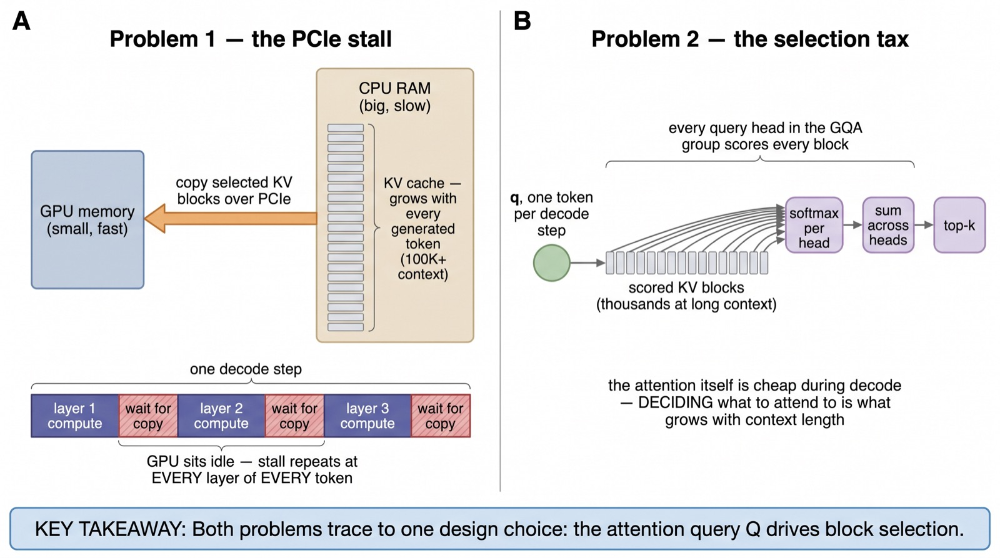
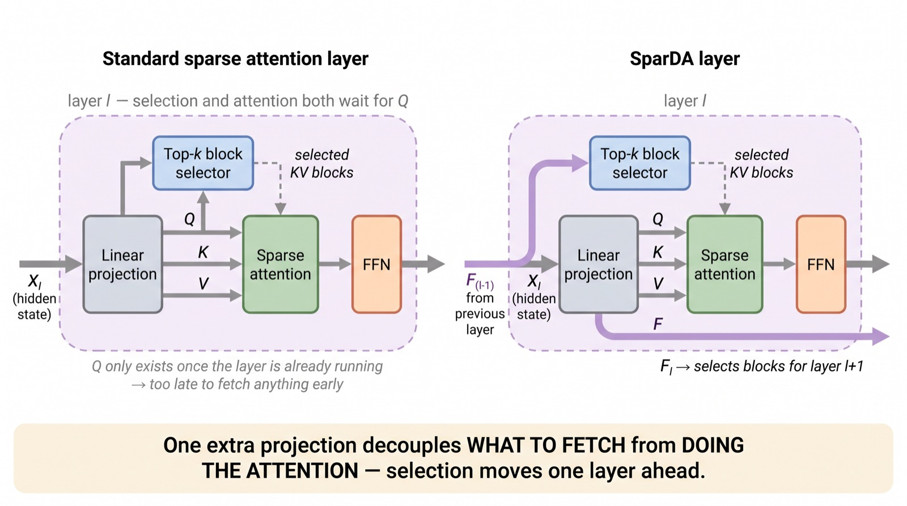
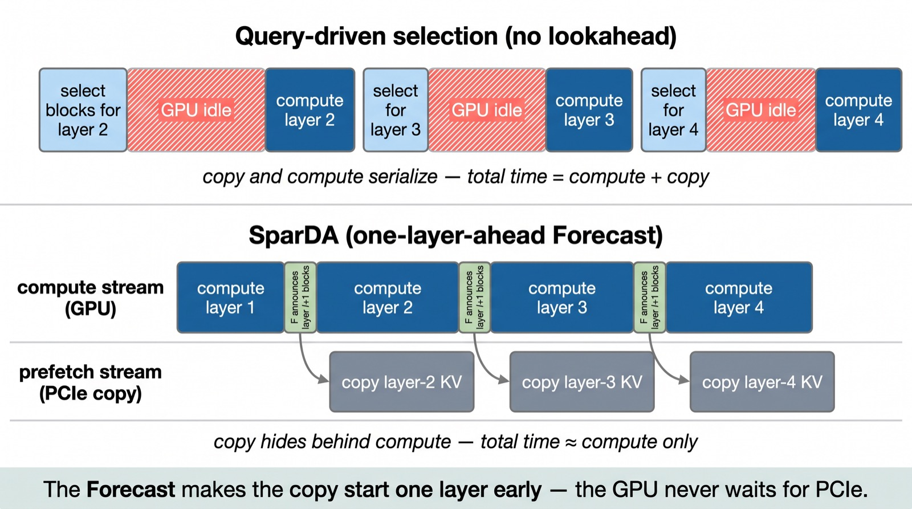
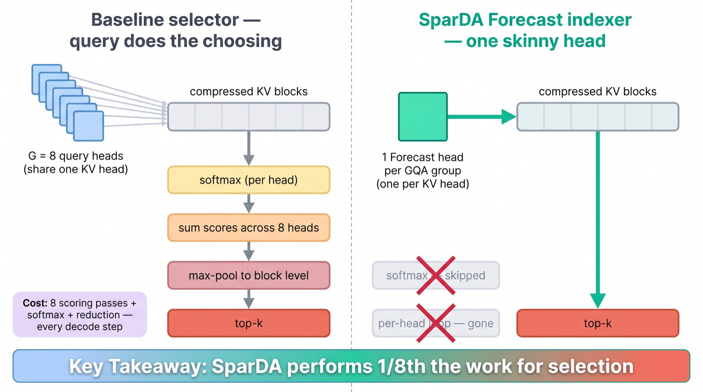
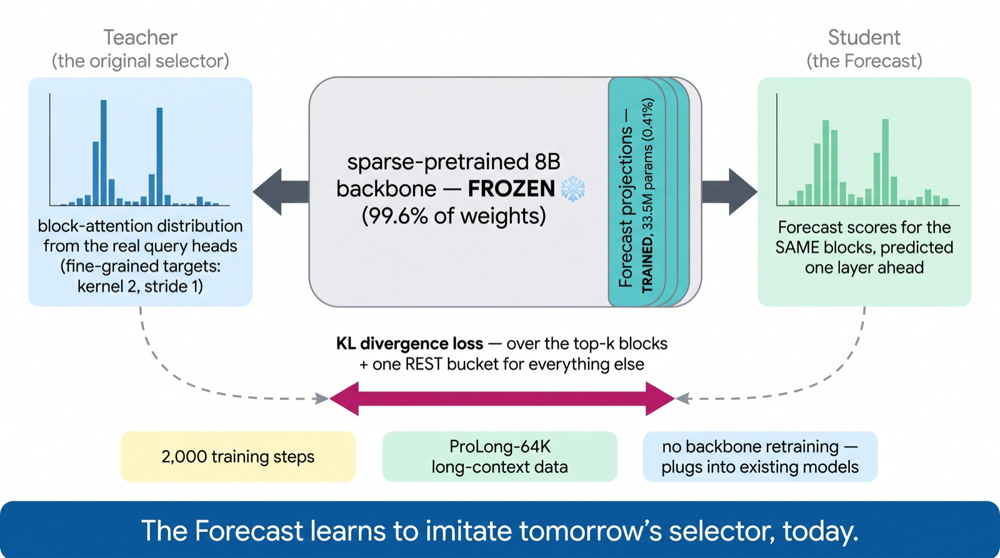
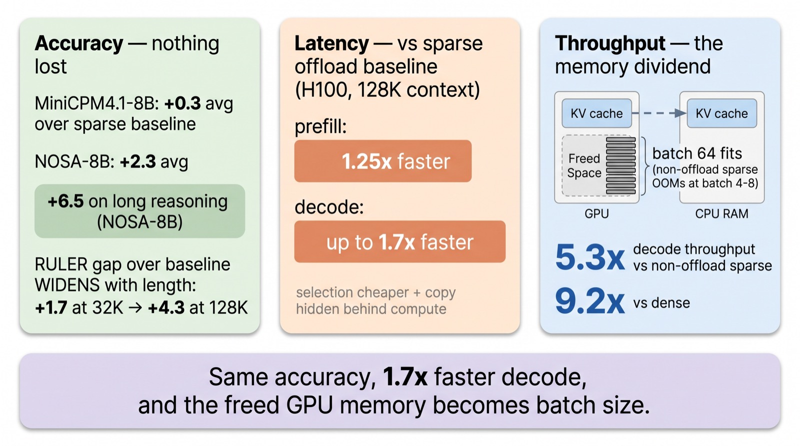

NVIDIA teaches attention to order tomorrow's memory, today
The Fourth
Projection
Every attention layer computes Q, K, and V. A new NVIDIA paper, SparDA, adds a fourth — the Forecast — which predicts what the next layer will need to read. That one change hides the slowest copy in long-context inference behind useful work, and makes decoding up to 1.7× faster.
At 100K+ tokens of context, the KV cache no longer fits on the GPU and moves to CPU RAM. Every layer then stalls, waiting for its memories to be copied back. SparDA — from NVIDIA, with MIT's Song Han — breaks the coupling that causes the stall: it stops letting the attention query decide what to fetch, and trains a tiny dedicated projection to decide one layer early.
Scroll to begin.
↓
A memory that outgrows its home
Every token a language model generates leaves a trace behind: a key and a value, stored in the KV cache so future tokens can attend back to it. This cache is the model's working memory — and it grows with every single token, forever. At short contexts nobody notices. At 100K-plus tokens — the regime of agents, long documents, and extended reasoning chains — the KV cache becomes enormous, and it simply stops fitting in GPU memory.
The obvious fix is the one your laptop uses when RAM runs out: move the cold data somewhere bigger. Offload the KV cache to CPU RAM, which is plentiful and cheap, and copy back only the pieces you need, when you need them. Modern sparse attention makes this plausible, because each decoding step only actually reads a small, selected subset of the cache.
But there's a catch. The highway between CPU RAM and the GPU is the PCIe bus, and it is slow compared to GPU memory. In the standard design, a layer first decides which pieces of memory it needs, then requests them from the CPU, then sits idle while the copy crawls across PCIe — and this stall repeats at every layer, of every decoding step, of every token. The paper we're reading today, SparDA (NVIDIA, June 2026), is about making that stall disappear.
How sparse attention chooses
Before we get to the trick, we need thirty seconds on how modern block-sparse attention works, because SparDA modifies exactly one piece of it. Instead of attending to every cached token, the cache is carved into blocks of 64 tokens. For each new query, the model attends to three groups of blocks:
The initial blocks (the "attention sink" at the start of the sequence) and the local window (the most recent tokens) are always included — no decision needed. The interesting part is the third group: a top-k selection over everything else. The model scores every candidate block for relevance to the current query, keeps the best k, and attends only to those. This is the recipe behind InfLLM-V2, NSA, MoBA and friends — and it cuts attention cost from "read everything" to "read ~96 blocks."
How does the scoring work? Each block is summarized by mean-pooling its keys into compressed representations. Then — and this detail is the villain of our story — the attention query itself scores the blocks. In grouped-query attention (GQA), every query head in a group scores every candidate block, each head's scores go through a softmax, and the results are summed across the group before the top-k is taken. A lot of machinery, all to make one shortlist.
Two problems, one root cause
With the cache offloaded to CPU RAM, decoding hits two separate walls. Problem one: the stall. Because the query produces the shortlist, and the query only exists once its layer is already running, the copy from CPU can only start after selection — which means the GPU waits for PCIe at every single layer. The transfer is on the critical path, and nothing overlaps with it.
Problem two: the selection tax. During decode there is only one query token per step, so the sparse attention itself is cheap. The expensive part is now the deciding: scoring every candidate block with every query head, softmaxing, summing. That cost grows linearly with context length — the paper measures that by 128K context, block selection rivals the attention computation itself, and during decode it becomes the dominant cost.

Here is the observation that makes the paper: both problems trace back to the same design choice — the attention query Q drives block selection. Q arrives too late for prefetching, and Q drags its multi-head layout into a job that needs neither multiple heads nor a softmax. Decouple selection from Q, and both walls fall at once.
Q, K, V… and F
SparDA's entire architectural change fits in one line. Where every transformer layer computes three projections from its hidden state, a SparDA layer computes four:
The newcomer, F — the Forecast — has one job: predict which KV blocks the next layer will want. Concretely, the Forecast produced in layer l is scored against layer l+1's compressed keys, and the top-k winners become layer l+1's block shortlist. Layer l+1's own query Q then performs sparse attention over that pre-made shortlist — Q never does selection again.

Two boundary cases, handled simply: the first layer has no predecessor, so it gets a small extra projection that forecasts for itself (its KV also stays on GPU permanently), and the final layer's Forecast is simply unused. Everything else in the model — every weight of the attention and FFN — is untouched.
If this "decoupled indexer" idea sounds familiar, it should: DeepSeek's DSA (the sparse attention in DeepSeek-V3.2) already separates its "lightning indexer" from the attention query, at the token level. SparDA takes that idea to block level — and adds the piece DSA doesn't have: the indexer runs one layer ahead, which is exactly what unlocks prefetching.
Hiding the copy
Now the stall problem dissolves. While layer l is still crunching its attention and FFN, its Forecast has already announced which KV blocks layer l+1 will read. So the runtime starts copying those blocks from CPU RAM immediately — on a separate CUDA stream, in parallel with layer l's compute. By the time layer l+1 begins, its memories are already sitting in GPU memory. The PCIe transfer still happens; it just happens behind useful work instead of in front of it.

The engineering behind this is lovely in its own right. Naïve prefetching would issue thousands of small, scattered memory copies — death by launch overhead. SparDA instead runs a persistent Triton kernel using Unified Virtual Addressing (UVA): a small, fixed squad of GPU thread blocks stays resident and continuously drains a queue of block-transfer tasks within a single launch. The squad size is tuned to batch size — at small batches the GPU is underutilized and a few thread blocks suffice; at large batches, transfer volume grows and the squad expands, deliberately trading a sliver of compute for keeping PCIe saturated.
An earlier system, InfiniGen (OSDI 2024), tried lookahead prefetching without training: it reused the raw hidden state as a proxy for the next layer's attention. The gamble is that adjacent layers look at similar things — and when that assumption breaks, accuracy breaks with it. SparDA's answer: don't guess from a proxy. Train a projection to make the prediction properly.
The skinny indexer
The second problem — the selection tax — falls to a quieter observation. The old selector was built from query heads, so it inherited their layout: in an 8B GQA model, that's several query heads per group, each scoring every block, each needing a softmax, then a cross-head sum. But none of that structure is required for making a shortlist. It was only there because Q happened to be the thing doing the scoring.
Once the Forecast is its own projection, it can be shaped for its actual job: one Forecast head per GQA group — one per KV head — instead of one per query head. The per-query-head scoring loop disappears. And because there is no longer a group of heads whose scores must be summed, the softmax is skipped entirely; raw scores go straight to top-k.

The measured effect: block-selection cost drops by up to 2.5× at 128K context during prefill, and during decode the selection time goes nearly flat as context grows — where the baseline's selection kept climbing and dominated the step. This is why SparDA speeds up prefill too (up to 1.25×), even though prefill has no offloading to hide: the skinny indexer is simply cheaper everywhere.
Teaching the Forecast
How do you train a projection to predict another layer's decisions? By distillation. The original query-driven selector — the machinery being replaced — becomes the teacher. For every position, the teacher's block-attention scores form a probability distribution over blocks: "here is where attention actually wanted to look." The Forecast is trained to reproduce that distribution one layer in advance, using a KL-divergence loss.
Two thoughtful details make the student sharp. First, the loss isn't computed over all thousands of blocks — the teacher's top-k blocks are kept individually, and all remaining probability mass is folded into a single rest bucket. The student focuses on ranking the blocks that matter while still being penalized for leaking mass outside the set. Second, the teacher's targets are built with much finer-grained pooling (kernel 2, stride 1) than the student uses at inference (kernel 32, stride 16) — a higher-resolution supervision signal that the paper's ablations show produces a measurably better indexer.

And here is the practical beauty: the backbone stays completely frozen. Only the Forecast projections train — 33.5M parameters on an 8B model, 0.41% of the total — for just 2,000 optimizer steps on long-context data. SparDA is not a new model; it's a bolt-on for models that already use block-sparse attention. No retraining, no accuracy roulette on the base weights.
The scoreboard
The team grafted SparDA onto two sparse-pretrained 8B models — MiniCPM4.1-8B and NOSA-8B — and measured both quality and speed on an H100. Quality first, because a speedup that costs accuracy is a trade, not a win. Across HELMET, LongBench, RULER and a long-reasoning suite (MATH-500, AIME), SparDA matches or beats the sparse baseline it replaces: +0.3 average on MiniCPM4.1-8B, +2.3 on NOSA-8B — with a striking +6.5 on long reasoning. And the advantage widens with context: on RULER, SparDA's lead over the baseline grows from +1.7 at 32K to +4.3 at 128K. The trained Forecast generalizes better than the training-free selector it imitated. (InfiniGen's proxy approach, tested head-to-head, loses several points everywhere — guessing is not a substitute for learning.)
Now speed. Against the same sparse model with offloading — the honest baseline — SparDA decodes up to 1.7× faster at 128K, from the hidden prefetch plus the cheaper selection. But the headline number comes from a different comparison. Keeping the cache on the GPU (no offloading) means long contexts devour memory: at 128K, the non-offload sparse baseline runs out of memory beyond batch size 4. SparDA parks the cache in CPU RAM, pays nothing for it thanks to prefetch, and spends the freed GPU memory on batch size 64 — pushing decode throughput to 5.3× the non-offload sparse baseline, and 9.2× dense attention.

That last mechanism deserves a highlight, because it reframes what offloading is for. Offloading was a compromise you accepted when memory ran out. With the copy fully hidden, it becomes a strategy you choose: evacuate the cache to CPU, and turn GPU memory into throughput.
Why this matters
The deepest idea in SparDA isn't the speedup — it's the reframing. Sparse selection used to be an operation: something computed inside a layer, tied to that layer's query, finished just in time to be used. SparDA turns it into a signal: something predicted early, cheap to produce, and — crucially — visible to the serving system before it's needed. Once the runtime knows the future access pattern, an entire toolbox of systems tricks opens up, of which CPU prefetching is only the first.
The authors are candid about the limits: SparDA doesn't make attention sparser or smarter — it makes an existing sparse method schedulable, and its accuracy is bounded by that base method. But the principle travels. The paper explicitly sketches the same lookahead applied to token-level DSA — the sparse attention inside DeepSeek-V3.2, GLM-5, and DeepSeek-V4's compressed-attention stack. If frontier labs adopt forecast-style indexers, the KV cache's permanent residence may quietly move from the GPU to CPU RAM, with nobody noticing except the throughput dashboard.
And that's the pattern worth watching across inference research right now: the wall between model architecture and serving system is dissolving. SparDA is a projection trained with a KL loss — pure ML — whose entire purpose is to feed a CUDA prefetch stream — pure systems. The best inference work of 2026 lives exactly on that seam.
Read the paper
SparDA: Sparse Decoupled Attention for Efficient Long-Context LLM Inference — Fu, Xiao, Dong, Han, Villa (NVIDIA, 2026). Code: github.com/NVlabs/SparDA